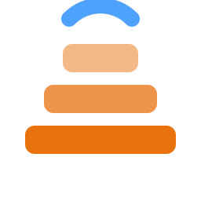

Resin settings that actually work on the TinyMaker.
Every resin here was printed on the machine, step by step, until the numbers held - then the whole
profile goes to your printer in one tap: exposure and base layers, lift distances and speeds, and the
density the printer uses to work out how much resin a model will take.
Why not just use the bottle? Those figures assume a mono screen. The TinyMaker masks
with a colour LCD, so the same resin needs roughly four times the exposure.
Each step answers what the previous one left open. The exposure strip cures eight bars at once and brackets the figure. The standard coupon narrows it and shows what that figure costs fine detail - pins, slots, a checkerboard. A simple model checks the number survives a real print with plate adhesion and lift, and a complex model - thin lattice walls, channels that must stay open - checks it survives a hard one. Only the last number is published.
On each chip: the first number is how many are finished and published, the grey +number how many samples are here waiting for plate time.
Calibration under way. Tough74 V2 comes first: it is the reference resin in Resione's own table, so the other five are derived from it.
Samples here and waiting for plate time, ordered by maker. A few already have working numbers published above: those were measured by hand before the current method existed, and they are back in the queue because the method keeps growing - a resin is only as calibrated as the sequence it went through.
Every resin runs the same sequence on the same machine, and the sequence itself is written down rather than carried in someone's head - that is the only reason two resins on this page can be compared at all.
All of it is printed on the same TinyMaker with the same film and the same UV panel. A different panel or a colder room shifts these numbers, which is exactly why they are measured rather than copied between printers.
The pixel is 0.1275 mm, so nothing thinner than about two pixels prints in any resin. Features are measured in pixels before they are blamed on chemistry - it has saved a full round on more than one resin.
Each step is recorded with its exposure, the resin used, the time it took and what the part looked like afterwards. The published profile is the last line of that record, not a separate opinion.
When the sequence gains a step, earlier resins go back in the queue. Entries measured before the current method say so on their card instead of quietly passing as finished work.
Tested and written by Viktoras Sidlauskas, who maintains the TinyMaker WiFi firmware. Manufacturers are welcome to send resin: it gets the same sequence as everything else, and the result is published whichever way it comes out.
Send a bottle and it goes through the same sequence as everything else on this page. There is no fee, no agreement to sign, and no promise about the outcome - the numbers are published whichever way they come out, because a catalogue that only prints good news is worth nothing to the person choosing a resin.
The resin is listed under the name you use in your own shop, with a link to it. If you would rather see different wording or your own photo on the card, say so and it goes in.
The result is not a review - it is a working profile. A TinyMaker owner installs it in one tap and prints, instead of burning a tank finding the exposure for a colour screen themselves.
Quote the figures, link to the page, put them in your own settings table or on the product page. They were measured on one machine and that is stated, so nobody is misled either way.

If you want to link back, take the mark here - no need to ask: SVG · PNG 512. Point it wherever fits: the resin results if the link sits next to a product, or tinymakerwifi.com for the project itself.
To send a sample or ask anything, write to hello@tinyowllabs.com - or find me in the TinyMaker owners' group, where the results get discussed by the people actually printing with them. The firmware, the manual and the source are at tinymakerwifi.com and on GitHub.